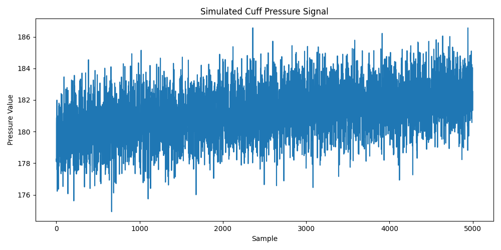

Perbandingan Waktu Eksekusi

Project ini merupakan simulasi pemrosesan sinyal tekanan cuff menggunakan Python. Program membuat data tekanan sintetis, kemudian memproses data tersebut menggunakan metode serial dan metode paralel.
Dalam sistem pengukuran tekanan darah, data tekanan dari cuff dapat diproses untuk menganalisis pola sinyal. Jika jumlah data cukup besar, komputasi paralel dapat digunakan untuk membagi beban kerja menjadi beberapa bagian kecil agar dapat diproses secara bersamaan.
Project ini terinspirasi dari konsep CuffnCode, tetapi hanya berfokus pada logic code dan simulasi pemrosesan data.
Data dibagi menjadi beberapa bagian berdasarkan jumlah core CPU yang tersedia. Setiap bagian data diproses oleh proses yang berbeda menggunakan multiprocessing pada Python. Setelah semua bagian selesai diproses, hasilnya digabungkan menjadi satu hasil akhir.
Program dibuat menggunakan Python, NumPy, Matplotlib, dan multiprocessing. NumPy digunakan untuk pengolahan data, Matplotlib digunakan untuk visualisasi, dan multiprocessing digunakan untuk menjalankan komputasi paralel.

Project ini menunjukkan bahwa komputasi paralel dapat diterapkan pada proses pemrosesan data sinyal. Dengan membagi data menjadi beberapa bagian, proses komputasi dapat dilakukan secara bersamaan menggunakan beberapa core CPU.
Nama: Pratama Idola Tua
NRP: 152024116